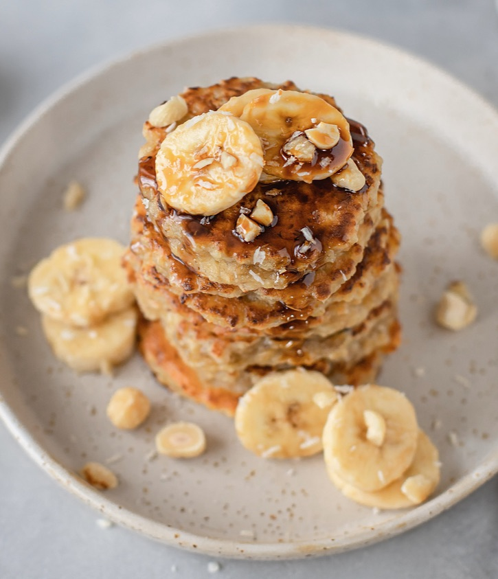

3 Ingredient Oatmeal Pancakes
3 Ingredient Oatmeal Banana Pancakes

A simple and wholesome Oatmeal Banana Pancake from The Lazy Dish.
My secret to using up those browning bananas.
Makes 6 small servings.
Ingredients
- 1 cup oatmeal
- 2 ripe bananas
- 2 eggs
- pinch of salt
- Additions of your choice (vanilla, cinnamon, berries)
Steps
- Preheat skillet on low heat.
- Blend or mix bananas, eggs, and oats together.
- Grease skillet with prefered choice of oil or butter.
- Scoop about 1/6 of batter per pancake on skillet. The smaller the better.
- If wanting additions, add on now. Allow pancake to fully cook before flipping. They are very fragile.
- Flip and cook other side.
- Serve with favourite pancake toppings.